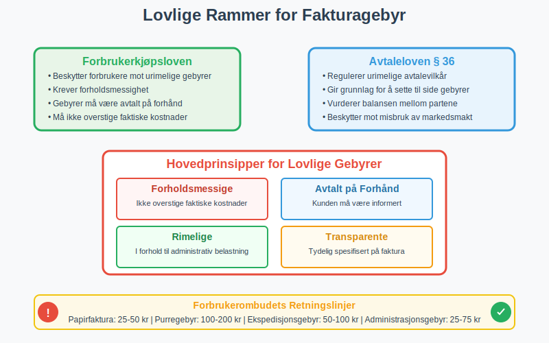
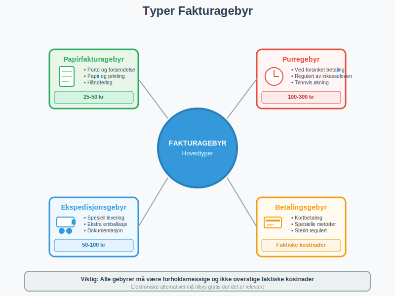
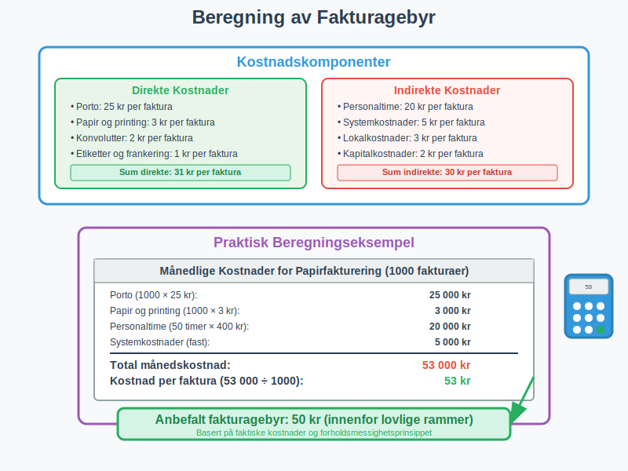
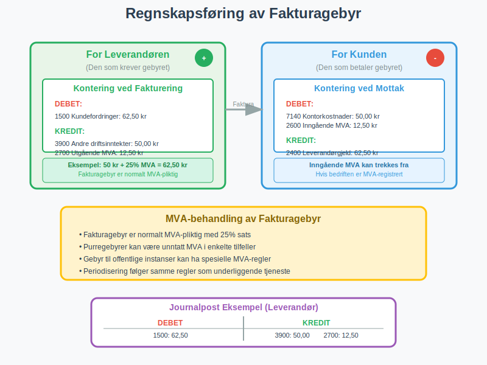
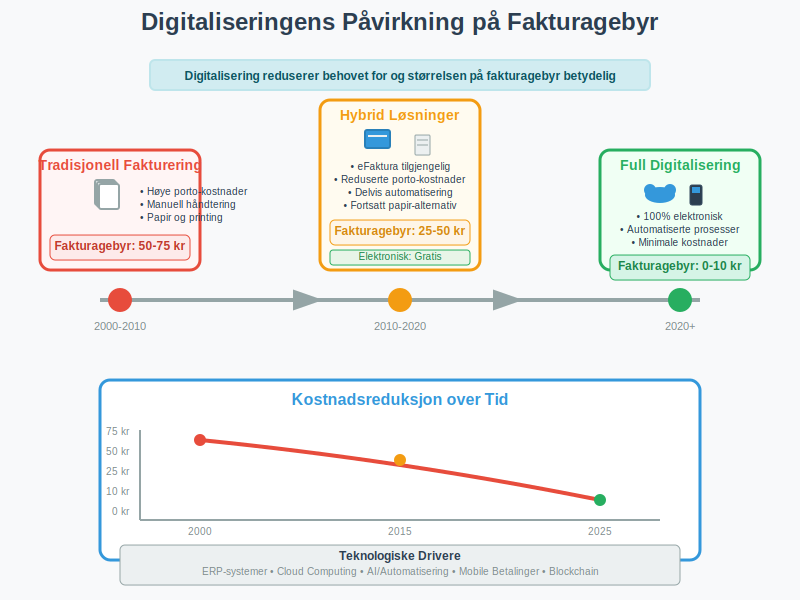

Et fakturagebyr er et tilleggsgebyr som en leverandør kan kreve fra kunden for å dekke administrative kostnader knyttet til fakturering og betalingsbehandling. Dette gebyret er særlig vanlig når kunder velger tradisjonelle betalingsmetoder som papirfaktura fremfor elektroniske alternativer som eFaktura eller AvtaleGiro.
Fakturagebyr har blitt et stadig mer aktuelt tema i norsk næringsliv, spesielt etter at mange bedrifter har digitalisert sine faktureringsprosesser. Gebyret skal i teorien reflektere de reelle kostnadene ved å håndtere fakturaer manuelt, inkludert porto, papir, printing og administrativ behandling.
Lovlige Rammer for Fakturagebyr
I Norge er fakturagebyr regulert av forbrukerkjøpsloven og avtaleloven, og det finnes klare retningslinjer for hva som er tillatt å kreve.

Hovedprinsipper for Lovlige Gebyrer
Fakturagebyr må være:
- Forholdsmessige: Gebyret kan ikke overstige de faktiske kostnadene ved fakturering
- Avtalt på forhånd: Kunden må være informert om gebyret før avtalen inngås
- Rimelige: Gebyret må stå i forhold til den administrative belastningen
- Transparente: Gebyret må være tydelig spesifisert på fakturaen
Forbrukerombudets Retningslinjer
Forbrukerombudet har etablert følgende retningslinjer for fakturagebyr:
| Gebyrtype | Maksimalt beløp | Betingelser |
|---|---|---|
| Papirfaktura | 25-50 kr | Kun hvis elektronisk alternativ tilbys |
| Purregebyr | 100-200 kr | Ved forsinket betaling |
| Ekspedisjonsgebyr | 50-100 kr | For spesielle leveringskrav |
| Administrasjonsgebyr | 25-75 kr | For ekstra administrative oppgaver |
Viktig: Disse beløpene er veiledende og må alltid vurderes mot de faktiske kostnadene bedriften har.
Typer Fakturagebyr
Det finnes flere typer gebyrer som kan knyttes til fakturering, hver med sine spesifikke regler og begrensninger.

1. Papirfakturagebyr
Dette er det mest vanlige fakturagebyr og pålegges kunder som velger å motta fakturaer på papir fremfor elektronisk. Gebyret skal dekke:
- Porto og forsendelse (se Konto 3910 - Utgående porto, avgiftspliktig)
- Papir og printing
- Konvoluttering og håndtering
- Administrativ behandling
Lovlige krav:
- Elektronisk alternativ må tilbys gratis
- Gebyret må ikke overstige faktiske kostnader
- Kunden må informeres på forhånd
For å unngå fakturagebyr kan kunder velge mellom ulike elektroniske faktureringsløsninger som eFaktura, Vipps eFaktura eller andre digitale alternativer.
2. Purregebyr og Betalingspåminnelser
Når fakturaer ikke betales innen forfallsdato, kan leverandøren kreve purregebyr. Dette er regulert av inkassoloven og har strenge rammer:
- Første purring: Maksimalt 100 kr
- Andre purring: Maksimalt 200 kr
- Tredje purring: Maksimalt 300 kr
Les mer om dette i vår guide til betalingsoppfordring.
Forsinkelsesgebyr omfatter alle kostnader ved forsinket betaling, inkludert purregebyrer, forsinkelsesrenter og inkassokostnader. For en komplett oversikt over lovgrunnlag, beregningsmetoder og praktiske råd, se vår omfattende guide til forsinkelsesgebyr.
3. Ekspedisjons- og Behandlingsgebyr
For spesielle leveringskrav eller ekstra administrative oppgaver kan bedrifter kreve tilleggsgebyrer:
- Ekspresslevering
- Spesiell emballasje
- Ekstra dokumentasjon
- Manuelle behandlingsprosesser
4. Betalingsgebyr
Noen leverandører krever gebyr for spesifikke betalingsmetoder, men dette er sterkt regulert:
- Kontantbetaling: Generelt ikke tillatt å kreve gebyr
- Kortbetaling: Begrenset til faktiske kostnader
- BankGiro: Kan ikke kreve gebyr utover faktiske kostnader
Beregning og Fastsettelse av Fakturagebyr
Korrekt beregning av fakturagebyr krever en grundig analyse av de faktiske kostnadene ved faktureringsprocessen.

Kostnadskomponenter
For å beregne et rettferdig fakturagebyr må bedriften kartlegge alle relevante kostnader:
Direkte Kostnader
- Porto: Faktisk kostnad for forsendelse
- Papir og printing: Kostnad per faktura
- Konvolutter: Kostnad per stykk
- Etiketter og frankering: Administrative materialer
Indirekte Kostnader
- Personaltime: Tid brukt på håndtering
- Systemkostnader: IT-infrastruktur og programvare
- Lokalkostnader: Andel av kontorleie og drift
- Kapitalkostnader: Renter på utestående fordringer
Beregningseksempel
La oss se på et praktisk eksempel på hvordan en bedrift kan beregne sitt fakturagebyr:
Månedlige kostnader for papirfakturering:
- Porto (1000 fakturaer × 25 kr): 25 000 kr
- Papir og printing (1000 × 3 kr): 3 000 kr
- Personaltime (50 timer × 400 kr): 20 000 kr
- Systemkostnader (fast): 5 000 kr
- Total månedskostnad: 53 000 kr
Kostnad per faktura: 53 000 kr ÷ 1000 = 53 kr
Dette gir grunnlag for et fakturagebyr på rundt 50 kr, som er innenfor lovlige rammer.
Regnskapsføring av Fakturagebyr
Korrekt regnskapsføring av fakturagebyr er viktig både for leverandør og kunde, og påvirker merverdiavgift og driftsresultat.

For Leverandøren (Den som Krever Gebyret)
Fakturagebyr regnskapsføres som driftsinntekt og er normalt MVA-pliktig:
Kontering ved fakturering:
Debet: Kundefordringer (inkl. MVA)
Kredit: Salgsinntekt fakturagebyr (eks. MVA)
Kredit: Utgående MVA
Eksempel:
- Fakturagebyr: 50 kr + 12,50 kr MVA = 62,50 kr totalt
- Konto 1500 (Kundefordringer): 62,50 kr
- Konto 3900 (Andre driftsinntekter): 50,00 kr
- Konto 2700 (Utgående MVA): 12,50 kr
For Kunden (Den som Betaler Gebyret)
Fakturagebyr regnskapsføres som driftskostnad og inngående MVA kan trekkes fra:
Kontering ved mottak:
Debet: Kontorkostnader/Administrative kostnader
Debet: Inngående MVA
Kredit: Leverandørgjeld
Eksempel:
- Konto 7140 (Kontorkostnader): 50,00 kr
- Konto 2600 (Inngående MVA): 12,50 kr
- Konto 2400 (Leverandørgjeld): 62,50 kr
Spesielle Regnskapsregler
MVA-behandling:
- Fakturagebyr er normalt MVA-pliktig med 25% sats
- Purregebyrer kan være unntatt MVA i enkelte tilfeller
- Gebyr til offentlige instanser kan ha spesielle MVA-regler
Periodisering:
- Gebyrer periodiseres i samme periode som den underliggende tjenesten
- Purregebyrer bokføres når de påløper
- Forskuddsbetalte gebyrer må periodiseres korrekt
Praktiske Råd for Bedrifter
For Leverandører som Krever Fakturagebyr
Før implementering:
- Gjennomfør kostnadsanalyse: Dokumenter faktiske kostnader ved papirfakturering
- Tilby elektroniske alternativer: Sørg for at eFaktura eller AvtaleGiro er tilgjengelig
- Oppdater avtalevilkår: Inkluder informasjon om gebyrer i standardvilkår
- Informer eksisterende kunder: Send varsel om endringer i god tid
Ved implementering:
- Vær transparent: Spesifiser gebyret tydelig på fakturaen
- Hold deg innenfor lovlige rammer: Ikke overskrid faktiske kostnader
- Bruk profesjonelle fakturamaler: Reduser administrative kostnader gjennom standardiserte maler
- Dokumenter beslutningsgrunnlag: Oppbevar kostnadsanalyser for eventuelle tvister
- Følg opp elektronisk overgang: Hjelp kunder med å bytte til elektroniske løsninger
For Kunder som Mottar Fakturagebyr
Vurdering av gebyrer:
- Sjekk om gebyret er lovlig: Er det forholdsmessig og avtalt på forhånd?
- Vurder elektroniske alternativer: Kan du spare penger ved å bytte?
- Sammenlign totalkostnader: Inkluder gebyrer i din leverandørvurdering
- Dokumenter for regnskapet: Sørg for korrekt kontering og MVA-behandling
Ved uenighet:
- Ta kontakt med leverandøren: Diskuter gebyret direkte først
- Kontakt Forbrukerombudet: Ved tvil om lovligheten
- Vurder leverandørbytte: Hvis gebyrer er urimelige
- Dokumenter kommunikasjon: Oppbevar all korrespondanse
Digitalisering og Fremtiden for Fakturagebyr
Den pågående digitaliseringen av faktureringsprocesser påvirker både behovet for og legitimiteten av fakturagebyr.

Teknologiske Utviklingstrender
Automatisering reduserer kostnader:
- ERP-systemer automatiserer faktureringsprocesser
- Elektronisk bilagsmottak reduserer manuell håndtering
- Automatisk avstemming minimerer administrative kostnader
Nye betalingsløsninger:
- Mobile betalingsapper reduserer behandlingskostnader
- Elektronisk fakturering blir standarden
- Sanntidsbetalinger eliminerer kredittrisiko
Regulatoriske Endringer
EU-direktiver:
- Krav om elektronisk fakturering i offentlig sektor
- Standardisering av elektroniske betalingsløsninger
- Økt fokus på forbrukerbeskyttelse
Norske myndigheters initiativ:
- Digitalisering av offentlig sektor
- Forenkling av MVA-rapportering
- Økt fokus på elektronisk fakturering
Fremtidsperspektiver
Forventet utvikling:
- Reduserte fakturagebyr: Lavere kostnader gir mindre grunnlag for gebyrer
- Økt regulering: Strengere krav til dokumentasjon av kostnader
- Forbrukerpress: Økt bevissthet om rettigheter
- Teknologisk standardisering: Enklere og billigere elektroniske løsninger
Anbefalinger for bedrifter:
- Invester i digitalisering: Reduser faktiske kostnader ved fakturering
- Fokuser på kundeopplevelse: Bruk teknologi for å forbedre service
- Vær proaktiv: Tilpass seg regulatoriske endringer i tide
- Kommuniser verdi: Forklar hvordan digitalisering gagner kunden
Juridiske Aspekter og Tvistehåndtering
Fakturagebyr kan være gjenstand for tvister, og det er viktig å forstå de juridiske rammene og prosessene.
Vanlige Tvistetemaer
Hyppige klager:
- Gebyr som ikke er avtalt på forhånd
- Uforholdsmessig høye gebyrer
- Manglende elektroniske alternativer
- Uklar spesifikasjon på faktura
Juridisk grunnlag:
- Avtaleloven § 36: Urimelige avtalevilkår
- Forbrukerkjøpsloven: Beskyttelse av forbrukere
- Inkassoloven: Regulering av purregebyrer
- Markedsføringsloven: Krav til informasjon
Tvisteløsning
Trinnvis prosess:
- Direkte forhandling: Kontakt leverandøren først
- Forbrukerombudet: Veiledning og mekling
- Forbrukerrådet: Juridisk bistand
- Forliksrådet: Formell tvisteløsning
- Domstolene: Siste utvei ved store tvister
Dokumentasjon som kreves:
- Opprinnelig avtale eller bestilling
- Fakturaer og korrespondanse
- Bevis for alternative betalingsmetoder
- Kostnadsanalyser (for leverandører)
Konklusjon
Fakturagebyr er et legitimt virkemiddel for bedrifter til å dekke reelle kostnader ved faktureringsprocesser, men må brukes ansvarlig og innenfor lovlige rammer. Nøkkelen til suksess ligger i å:
- Dokumentere faktiske kostnader grundig
- Tilby attraktive elektroniske alternativer
- Kommunisere transparent med kunder
- Følge juridiske retningslinjer nøye
For kunder er det viktig å forstå sine rettigheter og vurdere de totale kostnadene ved leverandørvalg. Den pågående digitaliseringen vil sannsynligvis redusere både behovet for og størrelsen på fakturagebyr over tid.
Bedrifter som ønsker å implementere eller justere fakturagebyr bør søke juridisk rådgivning og sikre at deres praksis er i tråd med gjeldende regelverk. Samtidig bør de investere i digitale løsninger som kan redusere faktiske kostnader og forbedre kundeopplevelsen.
Ved å følge beste praksis og fokusere på verdi for kunden, kan fakturagebyr være en rettferdig måte å håndtere kostnadsfordelingen i moderne forretningsdrift.